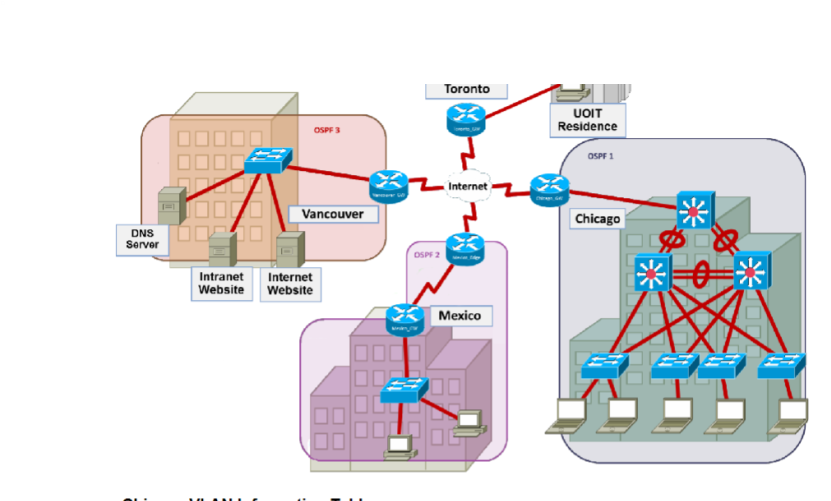
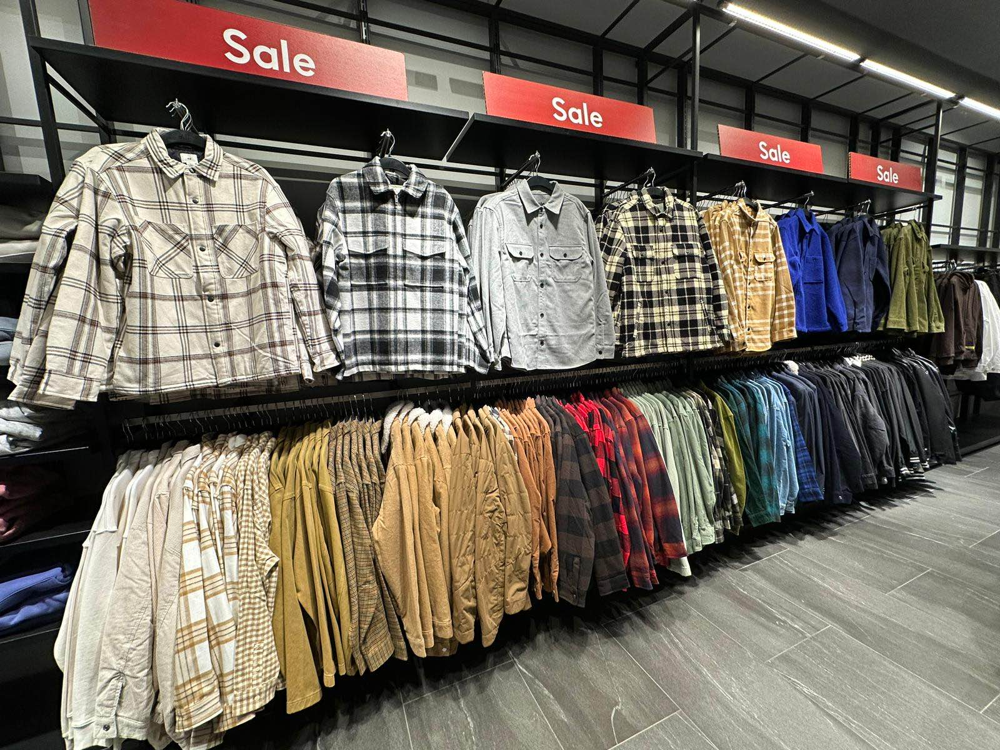

Network Creation
This project was a creation of a network that spanned across multiple regions, allowed for full connectivity, and even incorporated the Ontario Tech Residence. It involved the creation of VLANS, Static Routing, OSPF, and BGP Routing protocols to establish connectivity between all areas.
Example Header
Example description